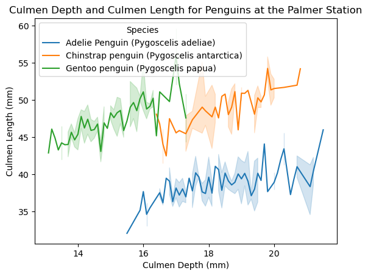
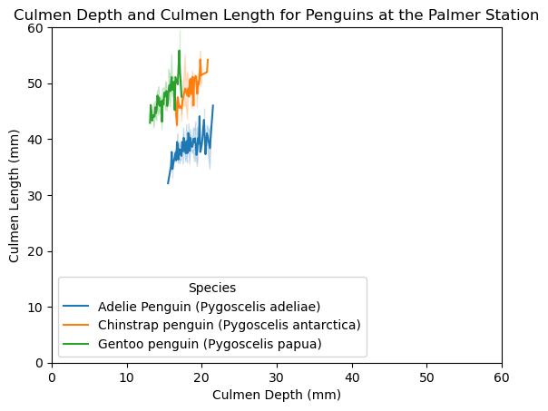

import pandas as pd #pandas library is used for data manipulation and analysis for large datasets
import seaborn as sns #seaborn library is used to create graphics
import numpy as np #numpy library is used when working with arrays and performing mathematical operations on them
import matplotlib.pyplot as plt #matplotlib is used to make visualizations and plotsVisualization tutorial using python
This is a tutorial on constructing an interesting data visualization of the Palmer Penguins data set

Imports
The first thing we need to do is import the necessary libraries. The pandas library is used for data manipulation and analysis for large datasets. The seaborn library is used to create graphics. The numpy library is used when working with arrays and performing mathematical operations on them.
Data Source
The next thing we need to do is read in the data set from the link it is hosted on.
We read it as a csv file and store it in a pandas data frame variable called df, which is a 2-dimensional data structure. We can preview the first 6 rows and its values of df using a function called head().
url = "https://raw.githubusercontent.com/pic16b-ucla/24W/main/datasets/palmer_penguins.csv"
df = pd.read_csv(url) #read it as a csv file and store it in a pandas data frame variable called df, which is a 2-dimensional data structure
df.head() #preview the first 6 rows and its values of df using a function called head().| studyName | Sample Number | Species | Region | Island | Stage | Individual ID | Clutch Completion | Date Egg | Culmen Length (mm) | Culmen Depth (mm) | Flipper Length (mm) | Body Mass (g) | Sex | Delta 15 N (o/oo) | Delta 13 C (o/oo) | Comments | |
|---|---|---|---|---|---|---|---|---|---|---|---|---|---|---|---|---|---|
| 0 | PAL0708 | 1 | Adelie Penguin (Pygoscelis adeliae) | Anvers | Torgersen | Adult, 1 Egg Stage | N1A1 | Yes | 11/11/07 | 39.1 | 18.7 | 181.0 | 3750.0 | MALE | NaN | NaN | Not enough blood for isotopes. |
| 1 | PAL0708 | 2 | Adelie Penguin (Pygoscelis adeliae) | Anvers | Torgersen | Adult, 1 Egg Stage | N1A2 | Yes | 11/11/07 | 39.5 | 17.4 | 186.0 | 3800.0 | FEMALE | 8.94956 | -24.69454 | NaN |
| 2 | PAL0708 | 3 | Adelie Penguin (Pygoscelis adeliae) | Anvers | Torgersen | Adult, 1 Egg Stage | N2A1 | Yes | 11/16/07 | 40.3 | 18.0 | 195.0 | 3250.0 | FEMALE | 8.36821 | -25.33302 | NaN |
| 3 | PAL0708 | 4 | Adelie Penguin (Pygoscelis adeliae) | Anvers | Torgersen | Adult, 1 Egg Stage | N2A2 | Yes | 11/16/07 | NaN | NaN | NaN | NaN | NaN | NaN | NaN | Adult not sampled. |
| 4 | PAL0708 | 5 | Adelie Penguin (Pygoscelis adeliae) | Anvers | Torgersen | Adult, 1 Egg Stage | N3A1 | Yes | 11/16/07 | 36.7 | 19.3 | 193.0 | 3450.0 | FEMALE | 8.76651 | -25.32426 | NaN |
Cleaning the data
As we can see on row 3, there is a data entry with the studyName of PAL0708 where the values for the column describing the culmen length and depth, flipper length, body mass, and more are NaN. To take care of this, we should clean the data by getting rid of the rows where the values of the variables we want to investigate are NaN. Because we want to study the relationship between culmen depth and the length, we should only apply this function ~np.isnan() to those variable names, but if we wanted to thoroughly clean it, we could apply it to all the values. To check if we are removing the variables properly, we can check the shape of the data frame using print(df.shape) before and apply we remove the NaN values. As we can see, the shape went from (344, 17) to (342, 17), which means we were successfully able to remove 2 rows.
print(df.shape) # we can check the shape of the data frame using `print(df.shape)` before and apply we remove the NaN values
df = df[~np.isnan(df["Culmen Depth (mm)"])] #we should clean the data by getting rid of the rows where the values of the variables we want to investigate are NaN
df = df[~np.isnan(df["Culmen Length (mm)"])] #we should clean the data by getting rid of the rows where the values of the variables we want to investigate are NaN
print(df.shape) # we can check the shape of the data frame using `print(df.shape)` before and apply we remove the NaN values(344, 17)
(342, 17)Making the visualization
We are using the seaborns library to create a graphic. For the data, we are using “df,” which is our data set variable. We want to make a visualization of a line plot that shows the relationship between the Culmen Depth and the Culmen Length. To do this, we can make the x-axis, or the independent variable be the “Culmen Depth (mm)”. On the y-axis, the dependent variable is the “Culmen Length (mm)”. To create different lines for the different species of penguins, we can use the hue and set it to “Species”, which sets these lines as different colors.
Visualization details
The axis labels and the legend are automatically set based on the variables we defined. For the title, we can add it by using the .set_title function. It’s important to provide a title to provide context on the visualization.
The different colors of the lines help distinguish the type of penguin.
sns.lineplot(data = df,
x = "Culmen Depth (mm)", #set x axis to be culmen depth
y = "Culmen Length (mm)", #set y axis to be culmen length
hue="Species" #create three different lines with different colors for the different species
).set_title("Culmen Depth and Culmen Length for Penguins at the Palmer Station") #descriptive title
Text(0.5, 1.0, 'Culmen Depth and Culmen Length for Penguins at the Palmer Station')
Interpreting the Visualization
As we can see, there are three different penguin species we are investigating. For all three species, there is a positive correlation between Culmen Length and Culmen Depth, which means that as the Culmen Length increases for a penguin, the Culmen Depth will also increase. We can see that the penguin species with generally the highest Culmen Depth is the Adelie Penguin, despite them having the lowest Culmen Length.
Adjusting the axes
If we want to make the axes start from 0 to avoid misinterpretations, we can adjust the axis range like so plt.ylim(0, 60). This ensures accurate visual comparisons. The previous visualization had a preset axis range. Although it makes comparing the differences between the lines easier, it has the effect of accidentally misleading the viewers by making the differences seem bigger than reality. Although this new visualization with axes that start from 0 helps reduce bias, it is harder to read and also an eye-sore.
sns.lineplot(data = df,
x = "Culmen Depth (mm)",#set x axis to be culmen depth
y = "Culmen Length (mm)",#set t axis to be culmen length
hue="Species" #create three different lines with different colors for the different species
).set_title("Culmen Depth and Culmen Length for Penguins at the Palmer Station")#descriptive title
plt.ylim(0, 60) #make the axes start from 0 to avoid misinterpretations
plt.xlim(0, 60) #make the axes start from 0 to avoid misinterpretations